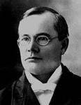

FORMER JUDGES
Judge Orlando J. Lotz
Orlando J. Lotz was born in Jay County, Indiana on January 15, 1851. Following work as a
school teacher, he earned a degree at the National Law School in Washington D.C. in 1874.
From 1875 to 1885, he practiced law in Muncie with Charles Kilgore and later with Frank Ellis.
In 1878, he married Amanda Inlow. They had a son, Walter J. Lotz, who also practiced law, in
Muncie and Hammond.
In 1885, Governor Issac P. Gray named Judge Lotz to the Delaware Circuit Court. He was
elected to the Circuit Court in 1886 and served there until 1893.
In 1892, Judge Lotz was elected to the Indiana Appellate Court and served one term, from
January 1, 1893 to January 1 1897. He then formed Gregory, Silverburg & Lotz with Ralph S.
Gregory and Adolphe C. Silverburg and practiced law with them for the next five years.
Judge Lotz was a Mason and a member of the Methodist Episcopal Church. He died in
Muncie on February 5, 1902.
school teacher, he earned a degree at the National Law School in Washington D.C. in 1874.
From 1875 to 1885, he practiced law in Muncie with Charles Kilgore and later with Frank Ellis.
In 1878, he married Amanda Inlow. They had a son, Walter J. Lotz, who also practiced law, in
Muncie and Hammond.
In 1885, Governor Issac P. Gray named Judge Lotz to the Delaware Circuit Court. He was
elected to the Circuit Court in 1886 and served there until 1893.
In 1892, Judge Lotz was elected to the Indiana Appellate Court and served one term, from
January 1, 1893 to January 1 1897. He then formed Gregory, Silverburg & Lotz with Ralph S.
Gregory and Adolphe C. Silverburg and practiced law with them for the next five years.
Judge Lotz was a Mason and a member of the Methodist Episcopal Church. He died in
Muncie on February 5, 1902.
